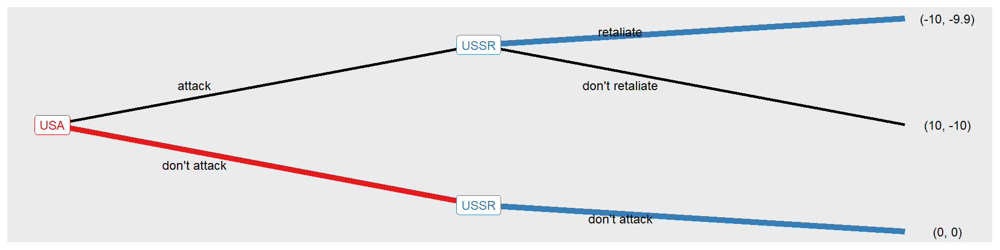

country2 |
|||
|---|---|---|---|
| strategy | peace | war | |
| country1 | peace | 0, 0 | 0, 5^ |
| war | 5^, 0 | 3^, 3^ | |
2 Games of War
“War is a game that is played with a smile. If you can’t smile, grin. If you can’t grin, keep out of the way till you can.”
Winston Churchill
In order to rationally address the issue of war, it is necessary to understand that war cannot be governed only as an optimization problem that regulates objective functions and constraints, nor even as a planning effort that declines the final objectives into specific actions to be implemented. Instead, it’s more like a strategy game.
The main feature of a strategy game is that the outcome of the game depends significantly and decisively on the decisions made by each player and not by any particular player. No one plays alone and the opponent’s moves influence the outcome of yours.
The second feature to keep in mind in understanding a strategic game is that each player has their own ultimate goals. So not all players evaluate the outcome of a game in the same way.
The third feature is that each player can decide between a different range of strategic choices to achieve their goals depending on the situation, skills and resources available to each.
In short, a strategy game defines a situation where different parties compete to achieve their goals with their choices of action, a so called strategic interaction.
The right attitude to face this type of interaction is expressed by this sentence of Abraham Lincoln who said: “When I prepare to reason with a man, I spend a third of my time thinking about myself and what I’m about to say, and two-thirds to him and what he is about to say.”
Indeed, in a war context it may be more relevant to consider what the enemy’s next move will be than to find out what is the best military plan in the current context.
Sun Tzu in his Art of War said: “If you know the enemy and you know yourself, you need not fear the results of a hundred battles. If you know yourself but not the enemy, for every victory you get you will also suffer defeat. If you don’t know neither the enemy nor yourself, you will succumb in every battle.”
2.1 war strategy through game theory
Game theory is a mathematical theory that tries to make sense of strategic interactions.
Major contributions to game theory as a mathematical theory include:
John Von Neumann and Oskar Morgenstern 1944 “Theory of Games and Economic Behavior” in which a mathematical theory for two-person zero-sum games is presented;
John Nash 1950 doctoral thesis “non-cooperative games” discussing a criterion for the mutual consistency of player strategies known as the Nash equilibrium;
the concept of solving subgame perfect equilibria, which further refined the Nash equilibrium, introduced in 1965 by Reinhard Selten. Selten also introduced the idea of bounded rationality that rationality is bounded when individuals make decisions, and based on these limitations, rational individuals will select a satisfactory decision rather than an optimal one.
Game theory has applications in all fields of the social sciences, as well as strategic decision-making, logic, systems science, and computer science.
In game theory, a game is described by four elements:
the players, or opponents as called in this short essay;
the strategies available to the players;
the order of moves to be played and
the payoffs for each different result and player.
Opponents (players in the classic game theory literature) are agents who make rational decisions in the conduct of the game: there are at least two opponents in any game or conflict.
Strategies are the set of alternative actions that each opponent can take in a game at a particular turn in the case of sequential game.
Move order can be simultaneous or sequential. In simultaneous play the opponents make their decision at the same time without having any prior knowledge of the opponent’s move. In sequential play, on the other hand, the opponent who moves later knows the strategy adopted in the previous move by his opponents. Ways to solve a game vary depending on the order of movement of the game as the notion of equilibrium is not sufficient to reason about sequential game.
Payoffs measure each opponent’s preference for the outcome resulting from opponents’ choices. The payoff number therefore indicates how satisfying (positive payoff) or unsatisfactory (negative payoff) a certain outcome of the game would be for a specific player.
In the four games (or conflicts) presented below in this section, the following assumptions hold:
games have a finite number of opponents where each has a finite number of possible courses of action;
each opponent will always act rationally by choosing the best answer in order to maximize gains and minimize losses for himself;
the payoffs are fixed and predetermined.
Under these hypotheses it is possible to analyze strategic games in order to predict how a game will be played, which strategies will be adopted by the players and the final outcomes and related payoffs. These predictions are called “solutions”.
Solutions for simultaneous play can be found using one of the following concepts:
strategic (strict) dominance;
better response and Nash equilibrium.
Strategic dominance occurs when one player’s strategy yields increasingly better payoffs regardless of the decisions of other opponents. The iterative elimination of strictly dominated strategies allows to find an equilibrium solution.
The best response is the strategy (or strategies) that produces the most favorable outcome for one player, taking the other players’ strategies for granted. The points by which each opponent in a conflict has selected the best response (or one of the best responses) to the other players’ strategies is called Nash equilibria.
The Nash equilibrium could be defined as a profile of strategies (one for each player) such that no single player can obtain a higher payoff by choosing another response to the strategies of other players.
In sequential games instead it is necessary to use the concept of perfect subgame equilibrium to find the solution to the given game. A subgame perfect equilibrium represents a Nash equilibrium of each subgame of the original game.
This means that at any point in the game, player behavior thereafter should represent a Nash equilibrium of the game, regardless of what happened before. To determine perfect subgame equilibria the methodology called backward induction is applied. Starting at the end of the game and working backwards determines what actions the moving player should take under all possible circumstances to maximize his utility and/or minimize his losses. The set of strategies thus determined are the solution to the game.
2.2 war or peace
War or Peace game is a simultaneous game where each opponent makes their move at the same time. The War or Peace game is a simultaneous game where each opponent makes their move at the same time. The situation depicted in the game is that of two nations targeting each other’s resources or contending for border territory. The opponents are country 1 and country 2 respectively. Each of the opponents can decide whether to wage war or remain in peace. The utility gained if both countries agree to be at peace is zero. If one of the two countries makes war while the other remains at peace, the first country will benefit. In the event that both countries enter the war, both could benefit from the new situation created.
The normal form representation of the game is defined by the following payoff matrix.
The solution to the game of war or peace, assuming rational choices, is war, war. Considering the concept of strategic dominance, it can be seen that for country 1, supporting peace (row 1, payoffs 0 and 0) is a decision dominated by the war strategy (row 2, payoffs 5 and 3). The same can be seen for country 2 for which being at peace (column 1, payoffs 0 and 0) gives worse results than going to war (column 2, payoffs 5 and 3) regardless of the decisions of the contender.
Considering the concept of best response and Nash equilibrium it is easy to realize that no opponent has an incentive to deviate from the war decision.
The only solution seems to be war!
2.3 generals deploy their armies
The strategic decision between peace or war has been made: war.
Now it’s the turn of military operations and the generals of both sides have to decide how many armies to deploy to the front. If one general face a battle with more armies than the other, he wins. When the generals deploy the same amount of forces the war scenario becomes a stalemate.
Assuming that the generals have comparable forces at their disposal, the following normal form game matrix describes the game.
general2 |
|||||
|---|---|---|---|---|---|
| strategy | no armies | few armies | a lot of armies | all the armies | |
| general1 | no armies | 0, 0 | -1, 1^ | -1, 1^ | -1, 1^ |
| few armies | 1^, -1 | 0, 0 | -1, 1^ | -1, 1^ | |
| a lot of armies | 1^, -1 | 1^, -1 | 0, 0 | -1, 1^ | |
| all the armies | 1^, -1 | 1^, -1 | 1^, -1 | 0^, 0^ | |
The strategy profile that requires both sides to use their entire arsenal is the Nash equilibrium. No general will find preferable to make a moderate use of the force knowing that the enemy will try as hard as he can to overcome.
Analyzing this game the solution lead to more war, more arms. Strike as hard as you can is the basic idea of armed conflicts.
2.4 cold war
Cold War refers to an historical period, after World War II and before the Berlin wall fall, of geopolitical tension between the United States and the Soviet Union and their respective allies, the Western Bloc and the Eastern Bloc.
Cold war strategic situation can be described as a sequential game. This kind of game specifies the possible orders of events and allows each player to consider his plan of action not only at the beginning of the game but also whenever he has to make a decision. Respecting the historical fact that USA realized and used the nuclear bomb first, the game described in its extensive form by the tree diagram below gives USA the first move. Reverting the order of opponents move nothing change in the meaning of the game.

USA move first and can decide to attack or not, then USSR can retaliate or not. The preference for USA should be attack with a don’t retaliate response of the Eastern bloc. This USSR response option is clearly not credible. Once nuclear bombed Eastern bloc would surely react. As matter of fact solving this game with backward induction leads to a don’t attack, don’t attack equilibrium.
The backwards reasoning is as follows, if the USSR were attacked it would suffer equally whether it retaliated or not, but it is reasonable to assume that it would prefer to see the US equally affected. So the choice would be to fight back. Knowing this, the United States would find it advantageous not to attack.
The solution of the cold war game is the reason why you, the reader, and the author too, can wake up tomorrow morning.
With regard to the historical events related to the cold war, it is also interesting to remember how Ronald Reagan and Michail Gorbachev facilitated the easing of tensions between the two blocs at the end of the cold war. They did it one small step after another. Each deal required the elimination of a few nuclear weapons at a time by both sides.
What you can’t do in one go, maybe you can achieve step by step.
2.5 a rush towards clash
Considering a simultaneous game, called “chicken” in game theory literature, it is possible to arrive at slightly different solutions. The game situation is that of two countries in open conflict that can decide to escalate or to concede. Both countries have weapons of mass destruction, so if both decide to step up the outcome will be something neither would prefer (payoffs -100, -100). If both countries withdraw they will gain nothing, they will remain at the status quo (payoffs 0, 0). If one country proceeds to escalate the use of warfare while the other retreats, the first country will win the conflict (payoffs 5, -5).
country2 |
|||
|---|---|---|---|
| strategy | escalate | concede | |
| country1 | escalate | -100, -100 | 5^, -5^ |
| concede | -5^, 5^ | 0, 0 | |
Solving the game, two pure strategy Nash equilibria are found: escalate, concede and concede, escalate.
In discussing the games so far, opponents choose unique actions from the set of available actions. These are called pure strategies. In this game of escalation, however, an opponent may want to randomly choose between several courses of action. If an opponent randomly chooses which strategy to play, we say that the opponent is using a “mixed strategy” instead of a pure strategy. In a pure strategy an opponent definitely chooses an action, while in a mixed strategy he chooses a probability distribution on all the actions at his disposal.
A mixed strategy for an opponent is exactly a probability distribution over his set of available actions. At a mixed strategy Nash equilibriun, each opponent is indifferent between each of their pure strategy.
mixed strategy NE |
||
|---|---|---|
| strategy | country1 | country2 |
| escalate | 0.05 | 0.05 |
| concede | 0.95 | 0.95 |
The surprising result is that both opponents find a 5% probability of war escalation reasonable in a randomized hypothesis. In other words, there is a 5% chance of destroying our world which is thought to be reasonable.
2.6 Infinite games
So far we have examined the so-called finite games, i.e. games characterized by a finite and known number of players, by pre-established rules and by clear and somewhat known objectives among the parties involved.
However, there are also infinite games (as introduced by Sinek (2019) and Carse (1987)) in which the rules are not fixed and the goal of the game is not to win or get what you want, but to continue playing.
Problems can arise when some players play finite games while others play infinite games as different types of players make very different strategic choices.
Two examples in the context of this essay may clarify the idea.
Considering the US war intervention in Vietnam and the Russian invasion of Afghanistan, the US and Russia tried to win the war while the North Vietnamese and the Taliban were fighting for their lives. In both cases the players in a finite game context have run out of resources and the will to continue playing.
2.7 key takeaways
Game theory provides some insight into warfare.
The war or peace game suggests that war may be a rational decision given the characteristics of the game.
Generals … indicates that it is highly probable that all military assets will be deployed in the event of an armed conflict.
In cold war strategy game solution is not peace but to keep the tension high again and again.
The “rush towards clash” game indicates that it might be rational to keep a low probability of deciding the worst potential outcome.
As a general consideration, if warfare is viewed as a strategic game, players must ensure that they fully understand the definition of the game and therefore that they know who the players are, what strategies they can implement, the order of players’ moves and the preferences of each player for each possible outcome of the game.
As food for thought, it should be noted that the rational decision of states and world leaders may not be the rational choice for ordinary people living in those countries who in many cases are considered not a player but a pawn.
computation with R
The game presented in the chapter are computed and visualized using R package rgamer by Kamijo and Yanai (2023).